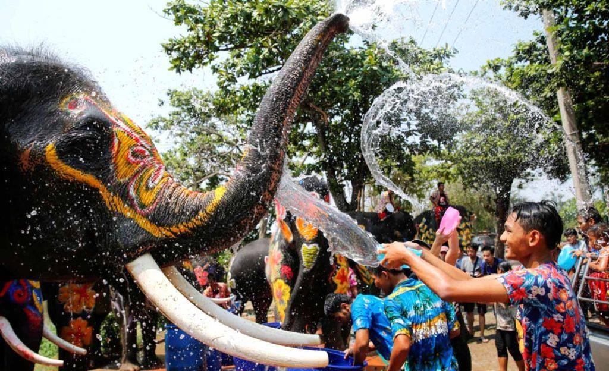

Сонгкран – семейный праздник, относящийся к буддизму. Считается тайским Новым годом. В этот день существует традиция готовить изысканные блюда для подношения священнослужителям, чтобы почтить буддийскую философию. Статуя Будды, которая находится в доме, омывается водой с жасмином и лепестками роз. Также принято поливать друг друга водой.
Сонгкран является самым старым тайским фестивалем. Событие символизирует переход в другое время года, как в привычном для нас плане, так и по индийской астрологии. Тайцы делят год на три сезона: холодный, жаркий и сезон дождей. Сонгкран является окончанием жаркого сезона, после которого начинаются дожди.
Праздник Сонгкран происходит из Древней Индии. Отсюда взято и название события, которое обозначает «переход». Поливание водой друг друга обозначает скорый сезон дождей и получение от этого хорошего рисового урожая. Праздник появился в Таиланде благодаря торговым путям всего Индокитая. Сонгкран празднуют и в соседних с Таиландом странах.
Торожество начинается с «тхам бун» – подаяния буддийским монахам, которые в ответ всех благословляют. В храмах проводятся различные ритуалы: сладости заворачивают в листья пальм и несут к священнослужителям, прославляют учение Будды и др.